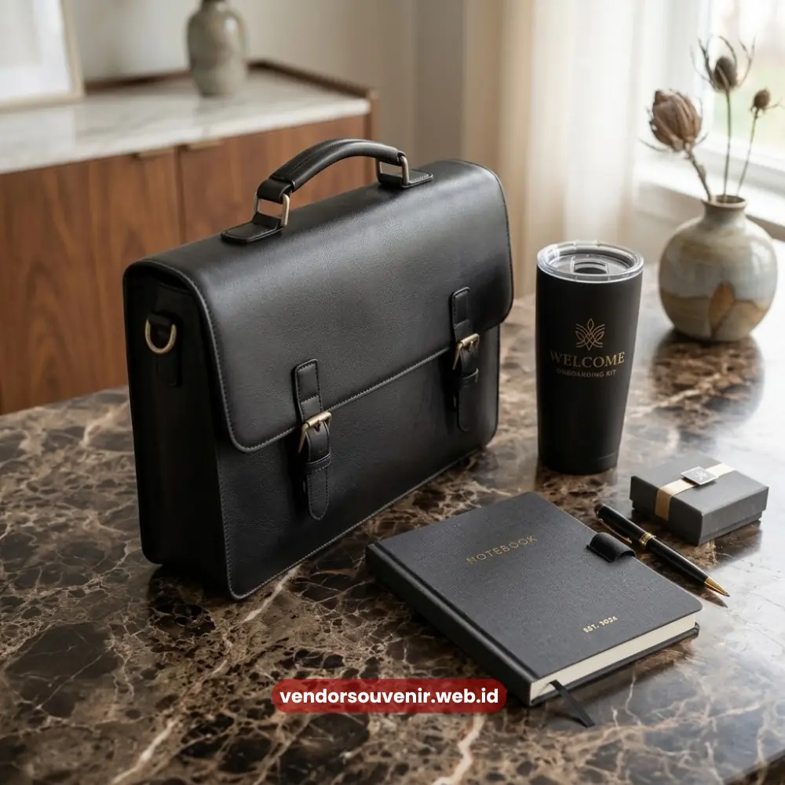

Daftar Isi
Paket onboarding karyawan adalah satu set perlengkapan kerja dan merchandise yang diberikan perusahaan kepada karyawan baru.
Paket ini diberikan secara khusus pada hari pertama mereka bergabung di perusahaan.
Paket ini umumnya berisi tas kerja, tumbler, notebook, alat tulis, dan atribut identitas perusahaan.
Semuanya dikemas rapi dalam satu kotak siap pakai yang menarik.
Vendor Souvenir menyediakan paket onboarding karyawan lengkap yang dapat dikustomisasi dengan logo perusahaan.
Produk ini juga siap dikirim ke seluruh Indonesia dengan promo gratis ongkir untuk pemesanan hari ini.
- Paket onboarding karyawan mempercepat proses adaptasi karyawan baru terhadap budaya perusahaan.
- Isi paket dapat disesuaikan dengan anggaran, mulai dari paket ringkas hingga paket premium.
- Setiap item dapat dicetak logo dan warna korporat agar identitas brand terasa konsisten.
- Vendor Souvenir melayani pemesanan partai besar dengan waktu produksi yang terukur.
- Tersedia promo gratis ongkir untuk kota-kota besar di Indonesia.
Apa Itu Paket Onboarding Karyawan?
Paket onboarding karyawan secara umum dapat dipahami sebagai bentuk sambutan formal perusahaan.
Sambutan ini diberikan kepada sumber daya manusia yang baru saja bergabung dengan tim.
Hal ini berbeda dengan seragam kerja yang bersifat fungsional semata.
Paket ini dirancang untuk memberi kesan pertama yang hangat bagi penerimanya.
Sekaligus memperkenalkan identitas visual perusahaan sejak hari pertama karyawan bekerja.
Kenapa Paket Onboarding Berbeda dari Souvenir Biasa?
Paket onboarding karyawan diberikan secara personal kepada individu yang baru bergabung.
Bukan sebagai suvenir massal yang dibagikan untuk klien atau tamu acara secara umum.
Fokusnya adalah menciptakan rasa memiliki (sense of belonging) yang kuat sejak awal.
Sehingga pemilihan itemnya biasanya lebih fungsional untuk mendukung aktivitas kerja sehari-hari.
Misalnya seperti tas laptop, tumbler minuman, dan alat tulis kantor yang berguna.
Kenapa Perusahaan Perlu Menyediakan Paket Onboarding Karyawan?
Karyawan baru yang menerima paket onboarding cenderung merasa lebih dihargai keberadaannya.
Perasaan ini akan timbul kuat sejak hari pertama mereka melangkah masuk kerja.
Kesan awal ini berpengaruh besar pada persepsi karyawan terhadap budaya kerja perusahaan secara keseluruhan.
Selain menyentuh aspek emosional, paket onboarding juga memberi nilai praktis yang tinggi.
Karena karyawan langsung memiliki perlengkapan kerja dasar tanpa perlu repot membelinya sendiri.
Apa Manfaat Paket Onboarding bagi Perusahaan?
Bagi perusahaan, penyediaan paket onboarding karyawan turut memperkuat konsistensi identitas visual brand.
Hal ini berlaku di lingkungan kerja maupun saat karyawan membawa barang tersebut ke luar kantor.
Item seperti tas atau tumbler berlogo perusahaan secara tidak langsung berfungsi sebagai media branding berjalan.
Dan media ini akan terlihat secara luas oleh lingkungan sekitar karyawan.
Apa Saja Isi Umum Paket Onboarding Karyawan?
Isi paket onboarding karyawan umumnya terdiri dari kombinasi barang fungsional dan barang identitas perusahaan.
Komposisi barang ini tentu saja dapat disesuaikan dengan kebutuhan dan anggaran masing-masing perusahaan.
Pilihannya sangat beragam, mulai dari paket sederhana hingga paket lengkap dengan banyak item.
Item Apa yang Paling Sering Dipesan?
Beberapa item yang sangat umum ditemukan dalam paket onboarding antara lain tas kerja atau totebag.
Kemudian tumbler atau botol minum, notebook beserta pulpen eksklusif.
Termasuk juga kartu nama sementara atau lanyard ID card untuk kebutuhan akses.
Serta merchandise tambahan pendukung seperti mouse pad atau flashdisk.
Kombinasi item ini dapat diatur ulang sesuai kebijakan dan kebutuhan divisi HR masing-masing perusahaan.

Pilihan Item Tas dan Tumbler untuk Onboarding
Berapa Kisaran Harga Paket Onboarding Karyawan?
Harga paket onboarding karyawan dapat bervariasi tergantung pada sejumlah faktor penting.
Terutama bergantung pada jumlah item, bahan yang digunakan, dan teknik cetak logo yang dipilih.
Secara umum, harga paket juga akan sangat menyesuaikan skala pemesanan yang dilakukan.
Di mana pemesanan dalam jumlah besar biasanya memperoleh penawaran harga yang jauh lebih kompetitif per unitnya.
Apa Saja Faktor yang Mempengaruhi Harga?
Faktor utama yang paling mempengaruhi harga paket onboarding karyawan meliputi jenis bahan tas dan tumbler.
Selain itu, jumlah warna pada cetakan logo juga turut menentukan biaya.
Kuantitas pemesanan secara keseluruhan menjadi faktor penentu harga yang sangat signifikan.
Serta apakah perusahaan meminta kemasan tambahan yang spesifik seperti boks eksklusif.
Semakin lengkap kustomisasi yang diminta, umumnya proses produksi juga membutuhkan waktu yang sedikit lebih panjang.
Bagaimana Cara Memesan Paket Onboarding Karyawan?
Proses pemesanan paket onboarding karyawan pada dasarnya dimulai dari tahap konsultasi kebutuhan.
Dilanjutkan dengan pemilihan item yang tepat dan penentuan desain logo yang akan dicetak.
Hingga berlanjut pada proses produksi yang diawasi ketat dan diakhiri dengan proses pengiriman.
Vendor Souvenir akan membantu perusahaan melalui setiap tahap kritis ini.
Tujuannya agar hasil akhir benar-benar sesuai dengan identitas brand yang diinginkan perusahaan.
Apa Saja Tahapan Pemesanan yang Perlu Disiapkan?
Perusahaan yang ingin memesan sebaiknya menyiapkan data estimasi jumlah karyawan baru.
Serta anggaran per paket yang telah dialokasikan oleh manajemen.
Sangat disarankan juga untuk menyiapkan file logo perusahaan dalam format vektor agar hasil cetak lebih tajam.
Dengan kelengkapan data tersebut, tim Vendor Souvenir dapat langsung menyusun rekomendasi.
Rekomendasi berupa komposisi paket yang sesuai kebutuhan serta estimasi jadwal produksi yang akurat.
Kesalahan Umum saat Menyiapkan Paket Onboarding Karyawan
Beberapa perusahaan sering kali menyiapkan paket onboarding secara sangat mendadak.
Tanpa memperhitungkan waktu produksi standar yang dibutuhkan oleh vendor.
Sehingga barang akhirnya belum siap saat karyawan baru mulai bekerja di hari pertama.
Kesalahan lain adalah memilih terlalu banyak item tanpa mempertimbangkan fungsi praktis sehari-hari.
Yang pada akhirnya membuat paket terasa kurang bernilai bagi penerima, meski jumlah itemnya terlihat banyak.
Bagaimana Menghindari Kesalahan Tersebut?
Perencanaan yang sangat matang adalah kunci utama keberhasilan program ini.
Pastikan jadwal pemesanan minimal beberapa minggu sebelum tanggal bergabung karyawan baru.
Hal ini dapat sangat membantu menghindari keterlambatan produksi dari pihak vendor.
Selain itu, fokus pada memilih item yang benar-benar relevan dengan aktivitas kerja harian dinilai jauh lebih efektif.
Tentu saja dibandingkan sekadar menambah kuantitas item tanpa fungsi yang jelas bagi karyawan.
Kesimpulan
Paket onboarding karyawan sesungguhnya bukan sekadar formalitas semata dari HR.
Melainkan sebuah investasi kecil yang berdampak besar pada kesan pertama karyawan.
Serta turut membangun rasa memiliki dan menjaga konsistensi branding perusahaan.
Dengan perencanaan yang tepat dan pemilihan vendor yang dapat sangat diandalkan.
Perusahaan dapat menghadirkan pengalaman onboarding yang berkesan mendalam bagi setiap karyawan baru.

Wujudkan Paket Onboarding Karyawan yang Berkesan!
Tim kami siap membantu Anda menyusun paket onboarding eksklusif sesuai budget perusahaan.
Bangun citra positif dan tingkatkan semangat kerja tim dengan merchandise berkualitas.
Dapatkan promo gratis ongkir hari ini!
FAQ Seputar Paket Onboarding Karyawan
Apa itu paket onboarding karyawan?
Paket onboarding karyawan adalah satu set perlengkapan kerja dan merchandise yang diberikan kepada karyawan baru pada hari pertama bergabung untuk mempercepat proses adaptasi.
Apakah paket onboarding karyawan bisa dicustom dengan logo perusahaan?
Bisa. Sebagian besar item seperti tas, tumbler, dan notebook dapat dicetak logo perusahaan sesuai identitas brand masing-masing.
Berapa minimal pemesanan paket onboarding karyawan?
Minimal pemesanan bervariasi tergantung jenis item, namun umumnya vendor menyediakan opsi mulai dari kuantitas kecil hingga partai besar.
Berapa lama waktu produksi paket onboarding karyawan?
Waktu produksi tergantung jumlah item dan kompleksitas desain, sehingga disarankan memesan beberapa minggu sebelum tanggal onboarding karyawan baru.
Apakah tersedia pengiriman ke luar kota?
Tersedia. Vendor Souvenir melayani pengiriman ke seluruh Indonesia dan menyediakan promo gratis ongkir untuk periode tertentu.
Maroon Souvenir
Partner Corporate Gift terpercaya di Indonesia. Berpengalaman melayani ratusan perusahaan sejak 2018.
Lihat Portofolio Kami